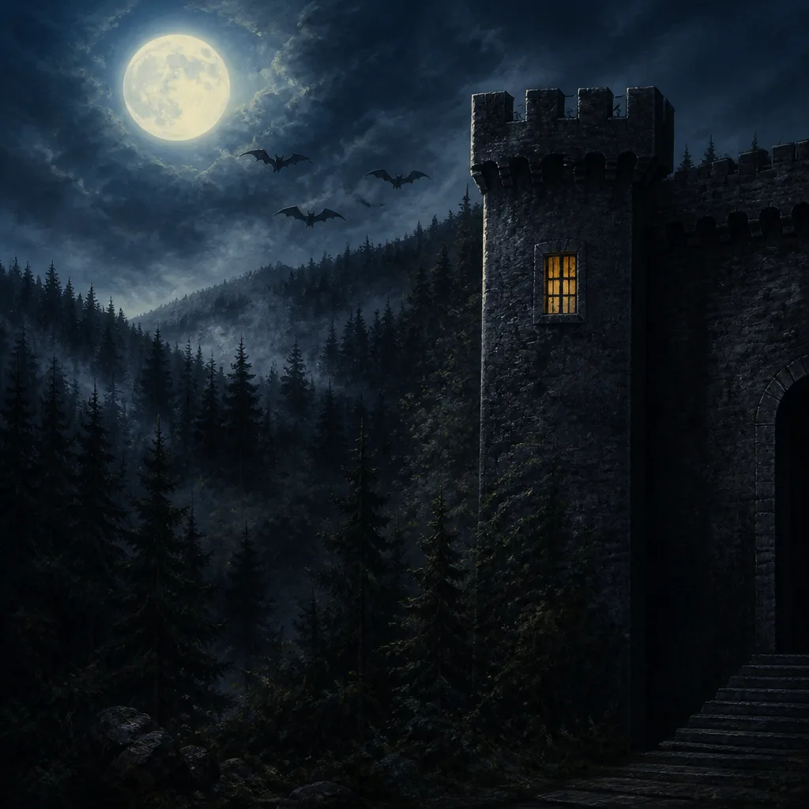
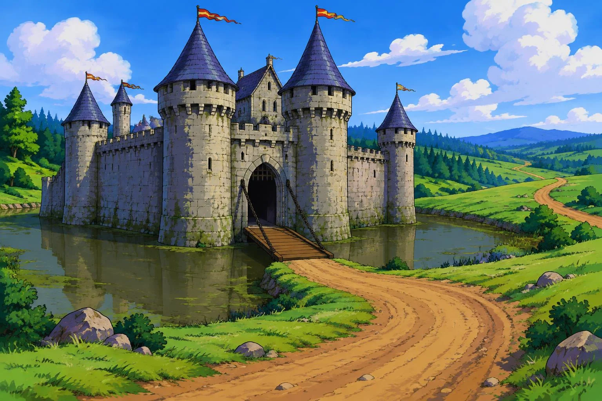

Transylvania
Find the vanished Princess Sabrina before sunrise. A werewolf stalks the forest, and something worse waits in the castle.
Play
The Quest
Gorn is sent to slay the dragon laying waste to the kingdom. Cross the desert, the mountains and the sea — and pick your companions well.
Play